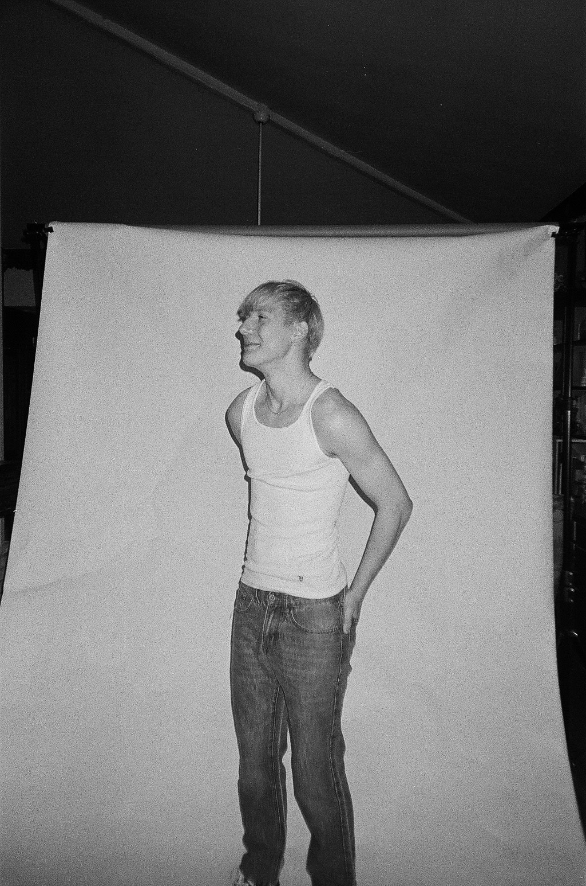

Hands-on pentesting workflows
Developed Python automation for exploitation workflows, custom privilege escalation work, credential harvesting pipelines, and reporting with remediation guidance.
Cybersecurity • Software • Leadership
I’m Dane Fortun, a Drexel University student focused on computing security. My work spans penetration testing labs, vulnerability remediation, secure full-stack development, and enterprise network design, with leadership experience in student government and community impact initiatives.

About
Developed Python automation for exploitation workflows, custom privilege escalation work, credential harvesting pipelines, and reporting with remediation guidance.
Co-founded BiteSwipe and remediated issues including SQL injection, XSS, and validation weaknesses while improving reliability through systematic debugging.
Designed VLAN-based architectures, ACL logic, routing, secure inter-VLAN communication, and higher-availability configurations to reduce lateral movement risk.
Education
2025 — 2028
B.S. in Computer Information and Security • Concentration in Computing Security
2022 — 2025
A.A.S. in Information Security
Selected accomplishments
State Farm grant secured as Student Senate President to improve student life.
Increase in student engagement through outreach, restructuring, and data-driven programming.
User-facing features shipped in BiteSwipe across HTML, CSS, JavaScript, and PHP.
Bugs debugged and resolved to improve application reliability.
Visual profile

